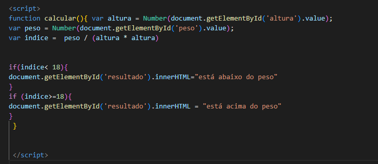

Voltar
Algoritmo 47 - "IMC"
Fazer um programa no qual o usuário digite a sua altura e o seu peso, final mostre o IMC (índice de massa corporal)
e uma mensagem se está abaixo do peso (IMC menor que 18) ou acima do peso (IMC maior ou igual a 18). IMC = peso / (altura * altura)
Digite sua altura
Digite seu peso
Calcular
Aqui será o seu resultado
